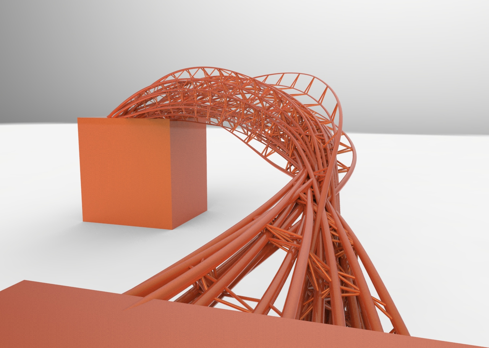
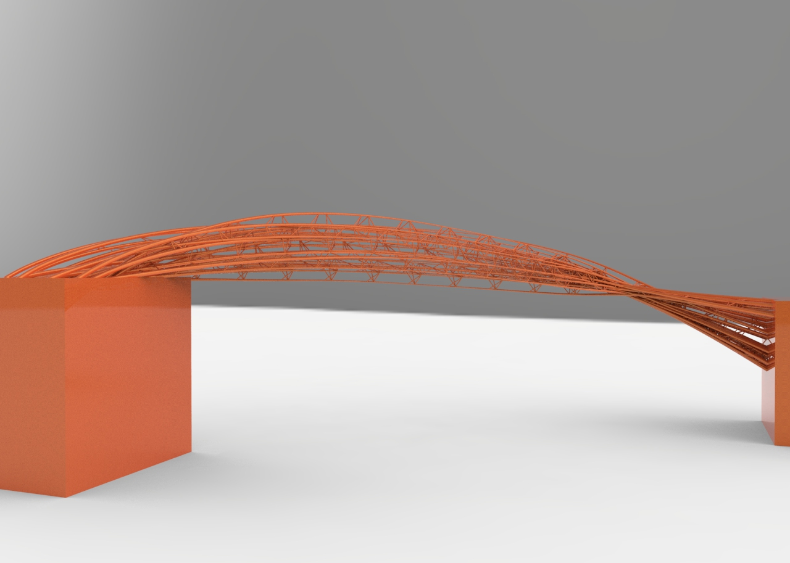
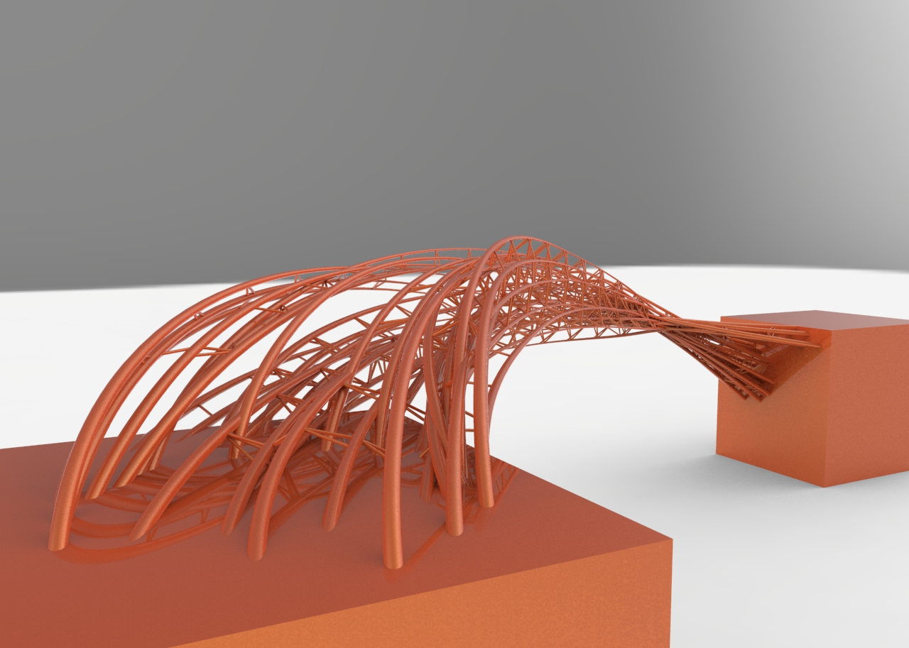

Rhino.Python Swarm Bridge
Part 2 of 4 of Series Rhino.Python
Swarm Behavior + Attractor : Agent methods: 1. Align : Move in the same direction as your neighbours. 2. Cohesion : Remain close to your neighbours. 3. Seperation : Avoid collisions with your neighbours. Attractor methods: (Controlling the shape) From starting points move to target points to create bridge. Using swarm simulation in Grasshopper is in this post: Swarm Python GH Component



import rhinoscriptsyntax as rs import Rhino as rc import time import math import scriptcontext as rc import Rhino.Geometry as rg from scriptcontext import escape_test from random import * rectX = 600 rectY = 600 class Runner: def __init__(self, p, v): self.p = p self.v = v self.a = rs.VectorCreate( (0,0,0),(0,0,0) ) self.ptList = [] def ptRun(self): self.v = rs.VectorAdd(self.v, self.a) v = rs.VectorLength(self.v) if v > 15: self.v = rs.VectorScale(rs.VectorUnitize(self.v), 15) self.p = rs.VectorAdd(self.p, self.v) self.a = rs.VectorCreate( (0,0,0),(0,0,0) ) self.ptList.append(self.p) def flock(self): self.separate(4.0) self.cohesion(0.001) self.align(0.1) self.attractor(0.7) def align(self, mag): steer = rs.VectorCreate( (0,0,0) , (0,0,0) ) count = 0 for i in pts: distance = rs.Distance(i.p, self.p) if distance > 0 and distance < 40: steer = rs.VectorAdd(steer, i.v) count += 1 if count>0: steer = rs.VectorScale(steer, 1.0/count) steer = rs.VectorScale(steer, mag) self.a = rs.VectorAdd(self.a, steer) def cohesion(self, mag): sum = rs.VectorCreate( (0,0,0) , (0,0,0) ) count = 0 for i in pts: distance = rs.Distance(i.p, self.p) if distance > 0 and distance < 60: sum = rs.VectorAdd(sum, i.p) count += 1 if count>0: sum = rs.VectorScale(sum, 1.0/count) steer = rs.VectorSubtract(sum, self.p) steer = rs.VectorScale(steer, mag) self.a = rs.VectorAdd(self.a, steer) def separate(self, mag): steer = rs.VectorCreate( (0,0,0) , (0,0,0) ) count = 0 for i in pts: distance = rs.Distance(i.p, self.p) if distance > 0 and distance < 30: diff = rs.VectorSubtract(self.p, i.p) diff = rs.VectorUnitize(diff) diff = rs.VectorScale(diff, 1.0/distance) steer = rs.VectorAdd(steer , diff) count += 1 if count>0: steer = rs.VectorScale(steer, 1.0/count) steer = rs.VectorScale(steer, mag) self.a = rs.VectorAdd(self.a, steer) def attractor(self, mag): attrPt = rs.VectorCreate((-800,-700,0) , (0,0,0)) steer = rs.VectorCreate( (0,0,0) , (0,0,0) ) diff = rs.VectorSubtract( attrPt, self.p ) diff = rs.VectorUnitize(diff) steer = rs.VectorAdd(steer , diff) steer = rs.VectorScale(steer, mag) self.a = rs.VectorAdd(self.a, steer) def drawLines(self): for i in pts: distance = rs.Distance(i.p, self.p) if distance < 40 and distance > 0: pt1 = rg.Point3d(i.p[0], i.p[1], i.p[2]) pt2 = rg.Point3d(self.p[0], self.p[1], self.p[2]) lns.append(rs.AddLine(pt1, pt2)) def drawPt(self): pt = rs.AddPoint(self.p[0], self.p[1], self.p[2]) return pt def setup(): global pts pts = [] global lns lns = [] numAG = 36 for i in range(numAG): p = rs.VectorCreate( rs.AddPoint( 100*math.cos(i*2*math.pi/numAG), 100*math.sin(i*2*math.pi/numAG),0) , rs.AddPoint(0,0,0) ) v = rs.VectorCreate( rs.AddPoint( -randint(2,18),-randint(18,36),randint(-2,26) ) , rs.AddPoint(0,0,0 ) ) run1 = Runner(p, v) pts.append(run1) def run(): pos = [] vec = [] for i in pts: pos.append(i.drawPt()) vec.append(i.v) for i in pts: i.flock() i.ptRun() if t > 10 and t%6==1: i.drawLines() def drawTime(): FPS = 30 last_time = time.time() global t t = 0 curves = [] # whatever the loop is... while True: # draw animation t += 1 # pause so that the animation runs at 30 fps new_time = time.time() # see how many milliseconds we have to sleep for # then divide by 1000.0 since time.sleep() uses seconds sleep_time = ((1000.0 / FPS) - (new_time - last_time)) / 1000.0 if sleep_time > 0: time.sleep(sleep_time) last_time = new_time run() print t if t > 108: for k in pts: curves.append(rs.AddCurve(k.ptList)) rs.EnableRedraw(False) for crv in curves: rs.AddPipe(crv, [0,0.5,1], [4,1,4], cap=2) for ln in lns: rs.AddPipe(ln, 0, 1, cap=2) rs.EnableRedraw(True) break escape_test() def main(): setup() drawTime() if __name__ == “__main__”: main()